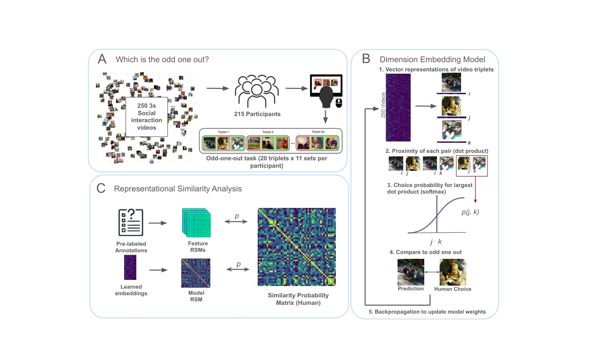
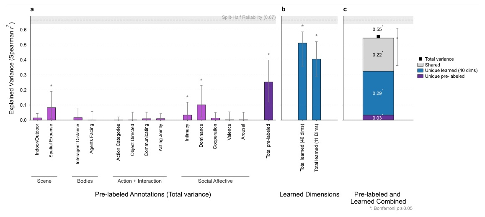
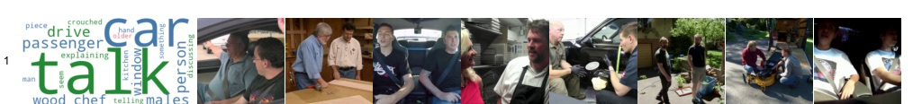
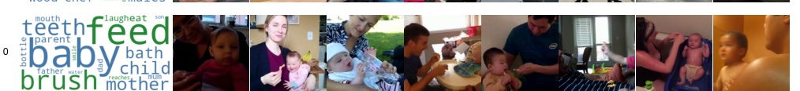
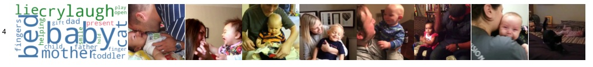
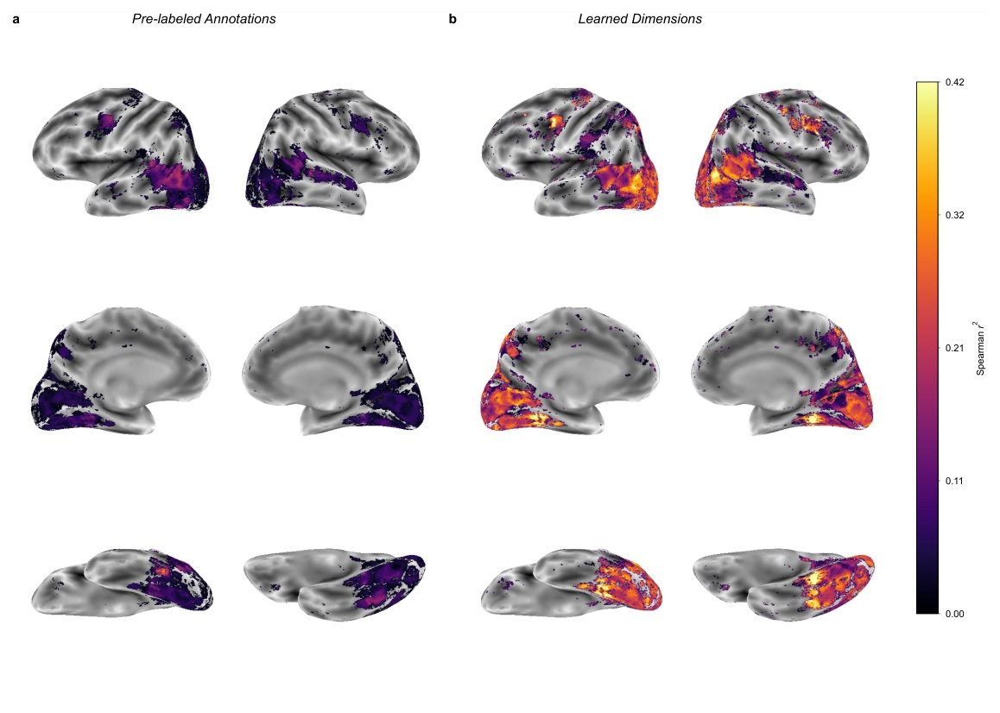
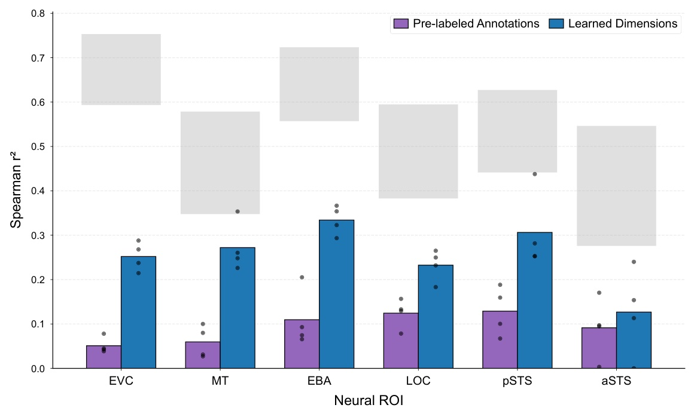
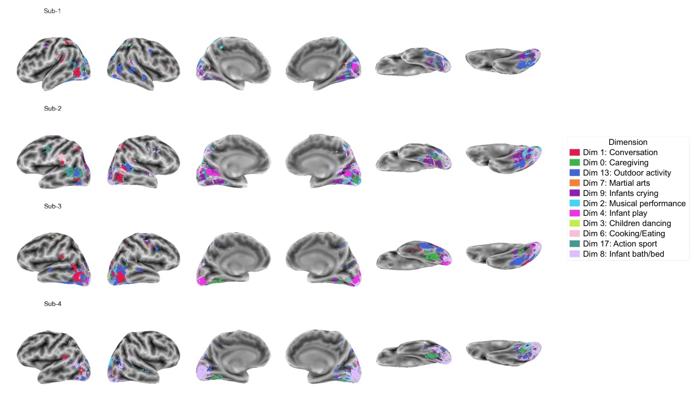
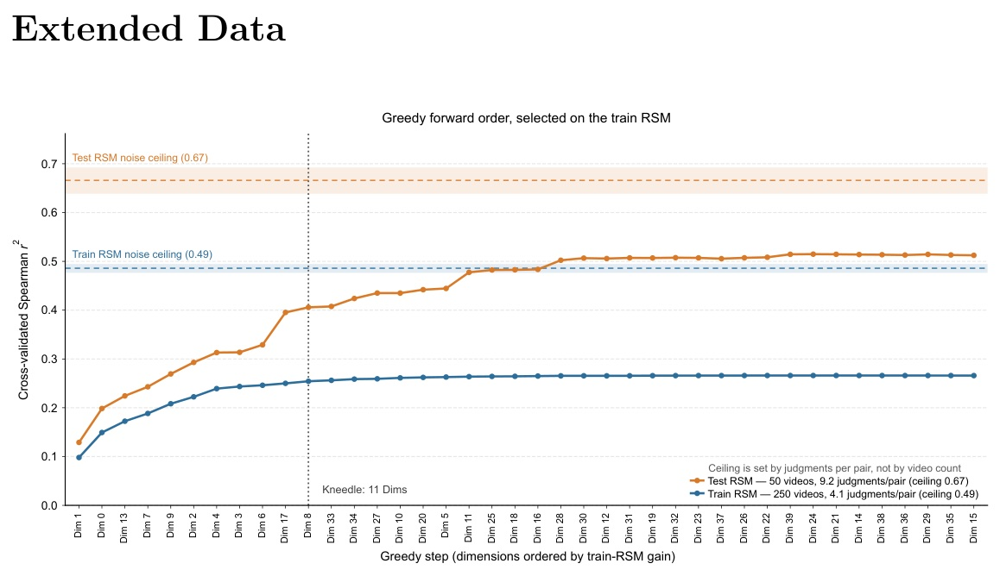
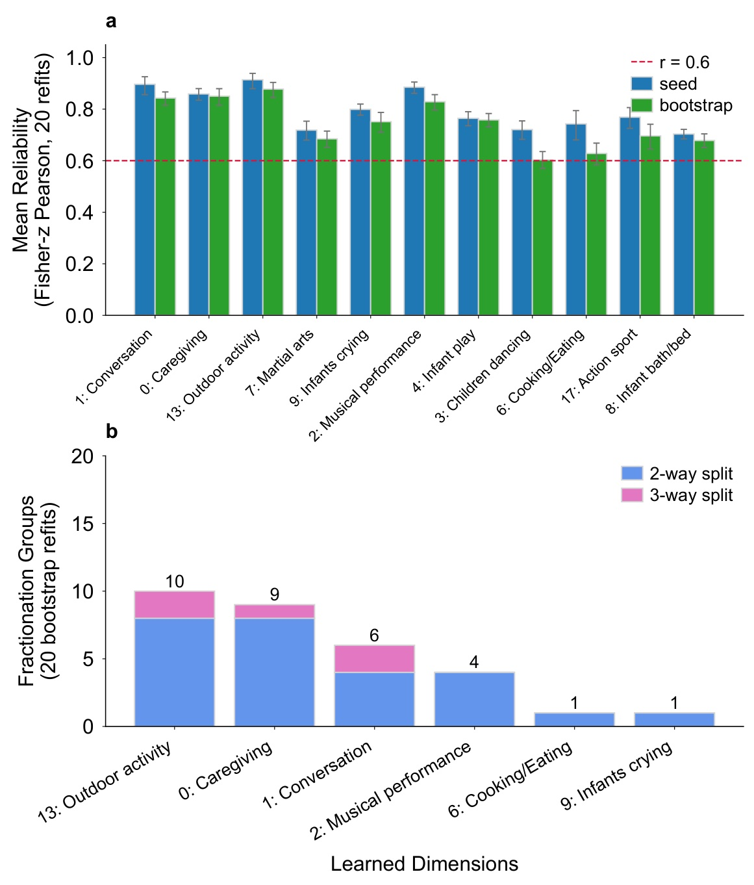

The top 11 learned dimensions: the 8 highest-loading videos for each, next to the most contrastive words from human-written captions.
00Overview
How does the mind organize dynamic social scenes? Instead of assuming a taxonomy, we learned one from behavior. The resulting dimensions explain twice as much variance as theory-based annotations, combine relationships with actions (who is doing what with whom), and predict visual cortex — including the lateral pathway and STS — better than those annotations.
53,223
odd-one-out triplet judgments
232
participants
40
learned sparse dimensions
2×
variance explained vs. pre-labeled annotations
Existing accounts organize social scenes along pre-defined dimensions: social-affective axes like warmth, dominance, valence, and arousal, or
action categories and action-related features. Both specify the candidate dimensions before measuring the representational space. We instead
collected odd-one-out similarity judgments on 250 naturalistic two-person videos and trained a sparse positive similarity embedding (SPoSE)
to recover the latent dimensions directly from behavior.
01Approach
250 videos3-second clips of everyday two-person interactions, with existing annotations and fMRI.
Judgments49,484 training triplets from 215 people; 3,739 held-out test triplets from 17 more.
SPoSEEach video is a sparse, non-negative vector trained to predict every odd-one-out choice.
TestMultiple-regression RSA against held-out behavior and fMRI, vs. 13 pre-labeled annotations.
Try a trial yourself — this is what participants saw:
Which clip is the odd-one-out?
There is no right answer; go with your intuition.
Each video starts as a point in a 90-dimensional non-negative space.
For a triplet (i, j, k), each pair's similarity is the dot product of its vectors; a softmax over the three gives the probability each pair is “most similar.”
The model minimizes the negative log-likelihood of human choices plus an L1 sparsity penalty. After training, near-empty dimensions are pruned, leaving 40.

(a) Triplet odd-one-out task. (b) The SPoSE model predicts the odd one out and is updated by backpropagation. (c) Pre-labeled annotations and learned embeddings are compared with the human similarity matrix using multiple-regression RSA.
02Learned dimensions explain twice the variance
All 13 pre-labeled annotations — scene, body configuration, action and interaction, and social-affective features — together explained only
r² = 0.25 of held-out human similarity (split-half reliability 0.67). Individually, only dominance, spatial expanse, and intimacy were significant.
Explained variance in held-out similarity judgments
Combining both sets shows the annotations add almost nothing beyond the learned dimensions, while the learned dimensions carry substantial unique variance.
Combined model (0.55)
.03
shared 0.22
unique learned 0.29
Bar length relative to the noise ceiling (0.67). Purple: unique to pre-labeled annotations (95% CI [−0.02, 0.06]). Gray: shared. Blue: unique to the 40 learned dimensions (95% CI [0.13, 0.38]).

Full results. (a) Each annotation and all 13 together. (b) All 40 learned dimensions and the top 11. (c) Variance partitioning of the combined model. Error bars: 95% CIs from a video-level bootstrap.
03Explore the dimensions
A greedy forward-selection curve has an elbow at 11 dimensions, which carry 79% of the full model's predictive power (r² ≈ 0.41).
Each is stable across retraining (mean reliability 0.60–0.88). Labels come from the top videos and a contrastive caption analysis: words
that appear in descriptions of high- but not low-loading videos. Pick a dimension:

Word colors: nounverbadjectiveadverb. JS = Jensen–Shannon divergence between high- and low-loading caption vocabularies (chance 0.61 bits).
Dim 1 · Conversation. Adults talking, often in cars.
JS 0.78 bitsDim 0 · Caregiving. Infant caregiving routines such as feeding and brushing teeth.
babyfeedbrushteethmotherchildbathparenteatlaugh
JS 0.80 bitsDim 13 · Outdoor activity. The one less social-centric dimension: it tracks scene annotations strongly (indoor/outdoor r = −0.61, spatial expanse r = 0.63).
fishdogfoxhunterspolewalkcrouchingdeadhikingkill
JS 0.75 bitsDim 7 · Martial arts. Martial arts and sports practice. Not significantly correlated with any pre-labeled annotation.
JS 0.74 bitsDim 8 · Infant bath / bed. Infant play and bath contexts — child–child play, where Dim 4 is parent–child.
bathcrybabybathroomlieballoontubsidebedbathtub
JS 0.76 bits
04Broad categories split into distinct social contexts
Related content is often fractionated rather than lumped together. Infant scenes separate into caregiving routines, crying, and affectionate
play; “play” itself splits by who is playing — parent–child versus child–child — even though the top verb for both is “play.” Adult scenes separate into
conversation, cooking and eating, sport, and more.

Dim 0 · Caregiving — feeding, brushing

Dim 4 · Infant play — laughing, playful parent–child
0.97
correlation between their annotation profiles — near-identical
0.76
correlation between the two learned dimensions
3 / 20
top-20 videos shared
19 / 20
retrains where fractionation recurs
The annotations describe these scenes almost identically, yet the embedding learned from people's judgments treats them as different situations.
05No dimension maps onto a single annotation
Correlations between the top 11 dimensions and the 13 pre-labeled annotations. Hover a cell for details; click a dimension to focus on it.
Dimensions that correlate with annotations usually span several families (scene, body, action, social-affective), and three (7, 17, 8) match none.
−1+1values shown where Bonferroni p ≤ 0.05
06The same dimensions predict visual cortex
In fMRI from four people who passively watched the same 250 videos — never making similarity judgments — the learned dimensions explained more variance
than the annotations across occipitotemporal cortex in every participant. Effects were strongest on the lateral surface (overlapping EBA and pSTS)
and in ventral temporal cortex. The advantage held, reduced, even with only the 11 core dimensions — fewer predictors than the annotation model.

Searchlight RSA in one representative participant: (a) 13 pre-labeled annotations vs. (b) 40 learned dimensions, with matched color scales.

Lateral-stream ROIs. The learned dimensions (blue) beat the annotations (purple) in every region — largest in EVC, MT, and EBA (Δr² ≈ 0.2) and pSTS (≈ 0.18), smallest in aSTS (≈ 0.04), where both remain well below the noise ceiling (gray).

Winner-take-all. Each voxel is colored by the top-11 dimension that best matches its local neural geometry. Different regions align with different aspects of the learned space.
07Robustness

Greedy forward selection. The elbow at 11 dimensions was fixed on the training data before any held-out evaluation. The 11 are a descriptive subset, not a claim that the representation has exactly 11 dimensions.

Recoverability. Reliability of the 11 dimensions across 20 seed and bootstrap retrains, against the r = 0.6 threshold (a permutation null never exceeds 0.26), and how often fractionation recurs.
08Takeaways
Relationships × actions. Social-scene representations jointly specify who is involved and what they are doing — something trait axes (relationships without activities) and action categories (activities without relationships) each miss.
Shared by behavior and brain. Dimensions learned from judgments predict fMRI better than theory-based features — even in the lateral stream, which image-computable models struggle to predict.
A target for models. The dimensions give a behaviorally grounded target for social vision; fine-tuned video models can already learn this similarity structure (see BGS).
09Citation
@misc{garcia2026finegrained,
title = {Human Similarity Judgments Reveal Fine-Grained Representations
of Relationships and Actions in Dynamic Social Scenes},
author = {Garcia, Kathy and Isik, Leyla},
publisher = {PsyArXiv},
note = {Preprint},
year = {2026}
}
An earlier version of this work was presented as a non-archival poster at CCN 2026 (“The Latent Dimensions Supporting Dynamic Social Scene Perception”).